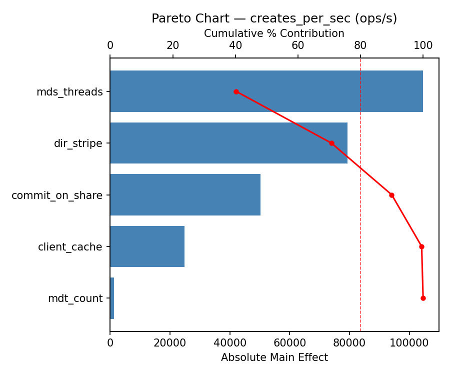
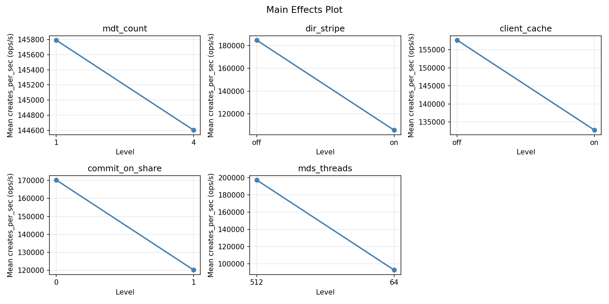
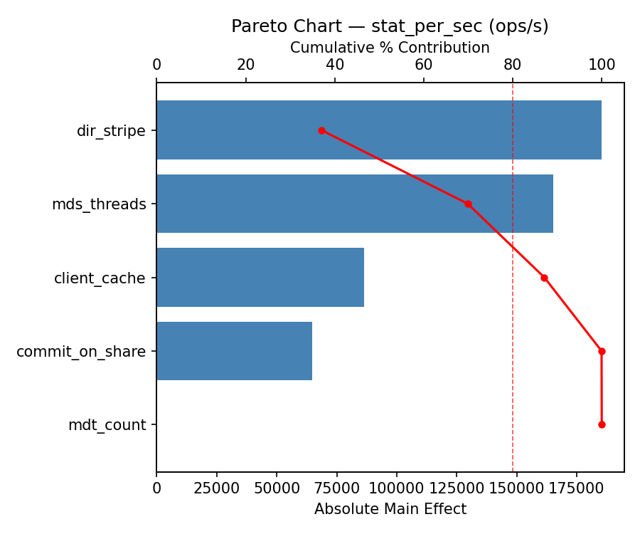
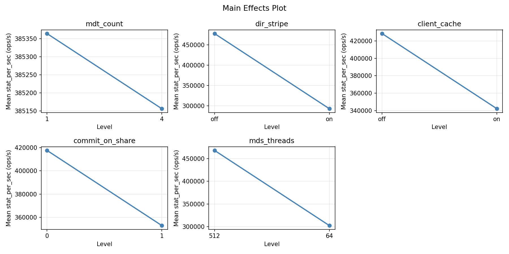
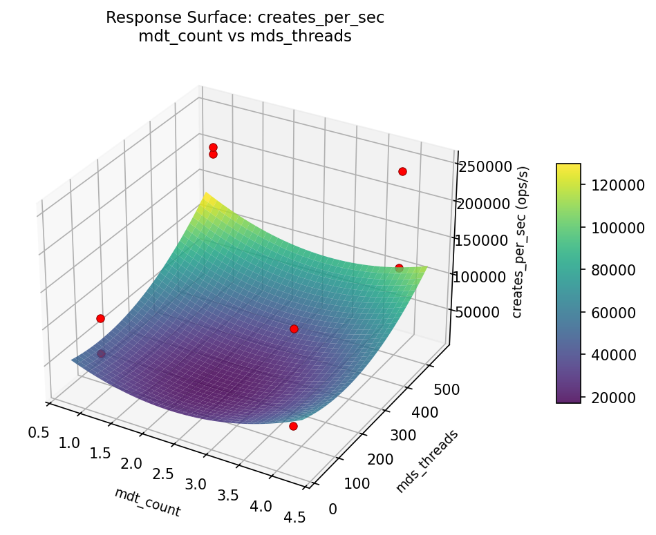
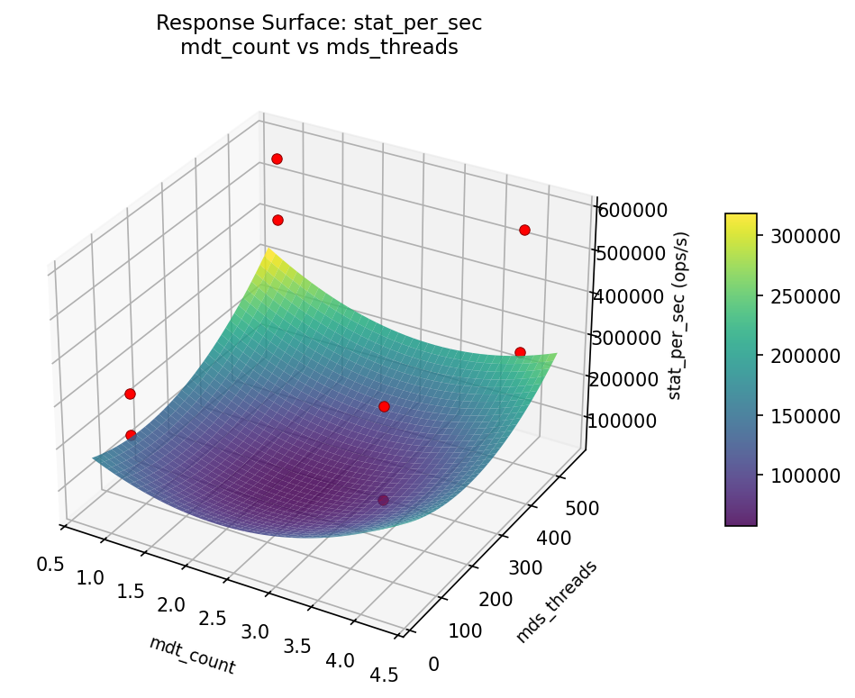

Experimental Setup
Factors
| Factor | Levels | Type | Unit |
|---|
| mdt_count | 1 – 4 | continuous | — |
| dir_stripe | off / on | categorical | — |
| client_cache | off / on | categorical | — |
| commit_on_share | 0 / 1 | categorical | — |
| mds_threads | 64 – 512 | continuous | — |
Fixed: filesystem = Lustre 2.15, clients = 256, files_per_dir = 100000, file_size = 4KB
Responses
| Response | Direction | Unit |
|---|
| creates_per_sec | ↑ maximize | ops/s |
| stat_per_sec | ↑ maximize | ops/s |
Experimental Matrix
The Fractional Factorial Design produces 8 runs. Each row is one experiment with specific factor settings.
| Run | mdt_count | dir_stripe | client_cache | commit_on_share | mds_threads |
|---|
| 1 | 1 | on | on | 0 | 64 |
| 2 | 4 | off | off | 0 | 64 |
| 3 | 4 | on | off | 1 | 64 |
| 4 | 4 | on | on | 1 | 512 |
| 5 | 1 | on | off | 0 | 512 |
| 6 | 4 | off | on | 0 | 512 |
| 7 | 1 | off | off | 1 | 512 |
| 8 | 1 | off | on | 1 | 64 |
How to Run
$ python doe.py info --config use_cases/23_parallel_filesystem_metadata/config.json
$ python doe.py generate --config use_cases/23_parallel_filesystem_metadata/config.json --output results/run.sh --seed 42
$ bash results/run.sh
$ python doe.py analyze --config use_cases/23_parallel_filesystem_metadata/config.json
$ python doe.py optimize --config use_cases/23_parallel_filesystem_metadata/config.json
$ python doe.py report --config use_cases/23_parallel_filesystem_metadata/config.json --output report.html
Analysis Results
Generated from actual experiment runs.
Response: creates_per_sec
Pareto Chart

Main Effects Plot

Response: stat_per_sec
Pareto Chart

Main Effects Plot

Response Surface Plots
3D surfaces fitted with quadratic RSM. Red dots are observed data points.
creates_per_sec: mdt_count vs mds_threads

stat_per_sec: mdt_count vs mds_threads

Full Analysis Output
=== Main Effects: creates_per_sec ===
Factor Effect Std Error % Contribution
--------------------------------------------------------------
mdt_count -79266.8750 27100.5311 27.5%
commit_on_share 65130.9250 27100.5311 22.6%
client_cache 64384.0750 27100.5311 22.3%
mds_threads -49695.2750 27100.5311 17.2%
dir_stripe -30027.9750 27100.5311 10.4%
=== Summary Statistics: creates_per_sec ===
mdt_count:
Level N Mean Std Min Max
------------------------------------------------------------
1 4 184830.9000 62379.6783 105398.4000 249574.6000
4 4 105564.0250 75029.8258 40375.1000 205855.9000
dir_stripe:
Level N Mean Std Min Max
------------------------------------------------------------
off 4 160211.4500 88325.5478 56673.6000 249574.6000
on 4 130183.4750 72849.1735 40375.1000 205855.9000
client_cache:
Level N Mean Std Min Max
------------------------------------------------------------
off 4 113005.4250 95144.5304 40375.1000 249574.6000
on 4 177389.5000 43514.3990 119351.5000 215246.1000
commit_on_share:
Level N Mean Std Min Max
------------------------------------------------------------
0 4 112632.0000 46252.7925 56673.6000 169104.5000
1 4 177762.9250 93499.6164 40375.1000 249574.6000
mds_threads:
Level N Mean Std Min Max
------------------------------------------------------------
512 4 170045.1000 69177.0474 105398.4000 249574.6000
64 4 120349.8250 85309.1234 40375.1000 215246.1000
=== Main Effects: stat_per_sec ===
Factor Effect Std Error % Contribution
--------------------------------------------------------------
mdt_count -185465.3500 51540.4068 35.9%
commit_on_share 144938.5500 51540.4068 28.1%
client_cache 106830.1500 51540.4068 20.7%
dir_stripe -51126.3000 51540.4068 9.9%
mds_threads -27756.6000 51540.4068 5.4%
=== Summary Statistics: stat_per_sec ===
mdt_count:
Level N Mean Std Min Max
------------------------------------------------------------
1 4 477992.7750 127599.8862 308208.9000 583347.3000
4 4 292527.4250 101848.2092 210750.3000 439149.3000
dir_stripe:
Level N Mean Std Min Max
------------------------------------------------------------
off 4 410823.2500 192964.5362 210750.3000 583347.3000
on 4 359696.9500 102997.4502 239717.8000 451711.8000
client_cache:
Level N Mean Std Min Max
------------------------------------------------------------
off 4 331845.0250 163107.0938 210750.3000 568703.1000
on 4 438675.1750 123991.9676 280492.3000 583347.3000
commit_on_share:
Level N Mean Std Min Max
------------------------------------------------------------
0 4 312790.8250 101284.2449 210750.3000 451711.8000
1 4 457729.3750 159132.3315 239717.8000 583347.3000
mds_threads:
Level N Mean Std Min Max
------------------------------------------------------------
512 4 399138.4000 132536.9516 280492.3000 568703.1000
64 4 371381.8000 177501.3331 210750.3000 583347.3000
Optimization Recommendations
=== Optimization: creates_per_sec ===
Direction: maximize
Best observed run: #4
mdt_count = 4
dir_stripe = on
client_cache = on
commit_on_share = 1
mds_threads = 512
Value: 249574.6
Factor importance:
1. mdt_count (effect: 129495.6, contribution: 54.3%)
2. client_cache (effect: 49695.3, contribution: 20.9%)
3. commit_on_share (effect: 30028.0, contribution: 12.6%)
4. dir_stripe (effect: 14902.2, contribution: 6.3%)
5. mds_threads (effect: 14155.3, contribution: 5.9%)
=== Optimization: stat_per_sec ===
Direction: maximize
Best observed run: #6
mdt_count = 4
dir_stripe = on
client_cache = off
commit_on_share = 1
mds_threads = 64
Value: 583347.3
Factor importance:
1. mdt_count (effect: 250935.5, contribution: 55.7%)
2. dir_stripe (effect: 79468.4, contribution: 17.6%)
3. commit_on_share (effect: 51126.3, contribution: 11.3%)
4. mds_threads (effect: 41360.0, contribution: 9.2%)
5. client_cache (effect: 27756.6, contribution: 6.2%)